中風寺奥の院/京都府美山町
京都府の北部、美山町。
かやぶき屋根の古い民家が数多く現存する絵に描いたような山の里だ。
そんな美山町にある中風寺は文字通り中風除けの寺として一部の年齢層には人気のお寺だそうな。
現在は瓦とスレート屋根になっているが、かつてやはりはかやぶき屋根だったという。
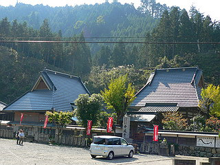 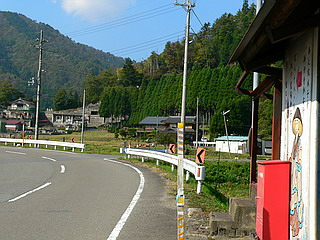
そんな山里の名刹、中風寺の数百メートル先に奥の院があることはあまり知られていない。
というか中風寺からも見えるのだが、その遠景を見てもまさかアレが名刹の奥の院だとは誰も思わないだろう。
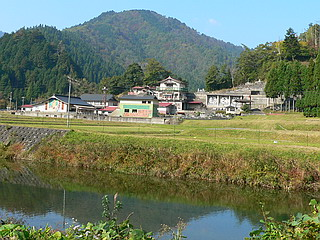
しかしよ〜く目を凝らすと「奥の院 千人堂」「地下霊場」などといった珍寺マニアにとっては超刺激的過ぎる看板が見え、しかもイイ感じの壁画まで添えられており期待値無限大。
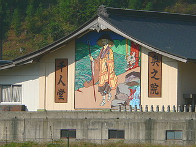 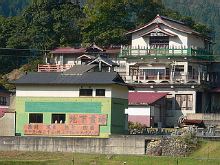
近づいてみると何とも不思議なトコロで大変戸惑う。
建物は和風建築だし奥のほうには石仏も見える。しかも入口には奥の院という石碑も立っている。
間違いない、間違いなくここが奥の院なのだ。
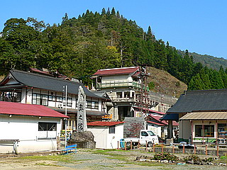 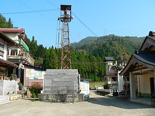
…なのに何だぁ？この荒涼感。
どこか工場や炭鉱と同じ殺伐としたオーラを感じるのは真ん中に鉄塔が建っているからだけではない。
全体の雰囲気が雑多で、作りかけっぽい雰囲気が濃厚なのだ。
さらに不思議な雰囲気に拍車をかけるのは境内のあちらこちらに描かれている謎のイラスト。
本当にこれが先ほどまでの古刹然とした中風寺の奥の院なのだろうか？
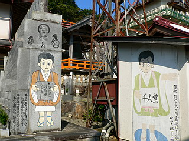
本気なのか冗談なのかを図りかねつつ、歩を進めると…
ドーン！
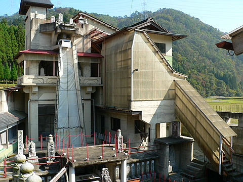
うわっっちゃ〜〜〜〜、ナンじゃこりゃ〜
こっ、これは…工場のプラントじゃあないのか…
三層にわたって張られた垂直の滑り台みたいなモノはまるでそこから生コンクリートがでろでろっと流れて来そうだし、右側のプラの波板に囲われた部分なんてベルトコンベアで砂とか吸い上げてそうだし。
あ、よく見ると垂直の滑り台は「七条御滝」となっている。そうか滝なんだ…
でもコレはお寺なんだよなあ〜、と5秒に1度は自分に言い聞かせないと一体自分がどこにいるかわからなくなってしまう。
この時点でここが名刹の奥の院としてふさわしいかどうか、などという最初の設問は十万億土の彼方に吹っ飛んでしまったのは言うまでもない。
近付いて下を覗くと…
さらに 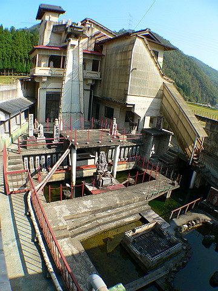 ド〜ン！
建物が建物だけに、まるで工場での精製物を沈殿させる池のようじゃあないか！
まるで生コン工場のプラントを買い取って寺院に転用したのではないか、と思えるほど即物的で仮設的（つまり超カッチョいいということです）な建物だ。
面白い！面白すぎるぞ！
池を回りこんで建物に記された赤い矢印に導かれるまま建物の中に入っていく。
この建物は百観音堂だそうだ。
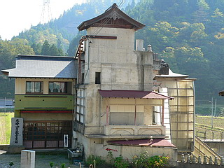
裏手に回ってみるとこの百観音堂、プラの波板で覆われていた建物（上画像の緑色の壁の建物；ここでは便宜上A棟と呼ばせてもらいます）と垂直滑り台、じゃなくて滝があった建物（上画像中央のコンクリの建物；B棟でお願いします）は別々の建物であることがわかる。
しかしこの先判明するのだが、この二つの建物は数々の階段で連結されており、まるでシャム双生児のごとく渾然一体の迷宮的空間を有しているのだ。
（ちなみにこの先はかなりややこしい説明なのでめんどくさい方は飛ばしちゃってください）
…さて。内部に入る。
ここはプラの波板に覆われた建物、つまりA棟の2階に当たる。
池とこの入口に高低差があるので2階が入り口になっているのだ。
中にはズラリと味のあり過ぎる石像が並んでいる。
この建物の外壁に書かれていた西国坂東秩父の各霊場の移し本尊なのだろう。
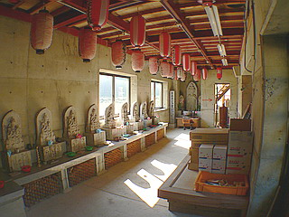 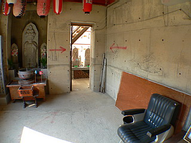
赤い矢印はさらに続く。
打ち放しのコンクリートの壁に書かれた矢印、積み上げられた段ボール箱と対峙する石仏群、鉄骨むき出しの天井から下がる赤提灯。全てがまっっっったくかみ合ってないところがスゴイ。
最初の部屋を出ると鉄骨の階段の下に出る。
後に知る事になるが、この階段が丁度プラの波板の内側になる。
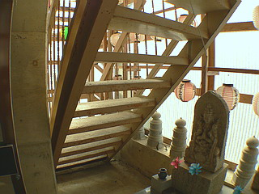
階段の下を右に右にと曲がると丁度A棟とB棟の隙間に出る。そこから階段を上る。
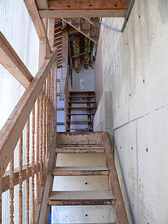
階段を上った左手には小さな小部屋がある。ここはB棟の2階に相当する。
ここにもコンクリ、石仏、提灯の3点セットが揃い踏み。ちぐはぐな空間を形作っている。
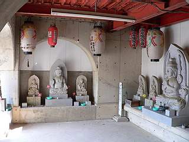
外を見れば池の向こうの建物には日本百八十八ヶ所霊場の文字が。
でも目の前には鉄パイプとビニールシートで作られた七条御滝とプラの波板。
呪文のように繰り返すコトバ、ここは寺だぞ、ここは寺だぞ、寺だぞ…
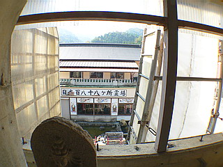 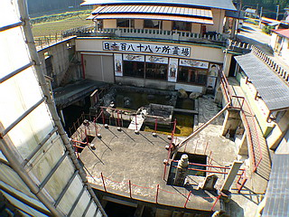
先ほどの階段からさらに上にのぼる
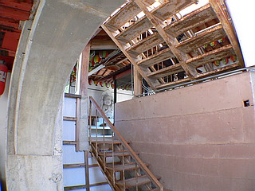
と今度はA棟の3階に。そこにも石仏が並んでいる。
そしてさらに階段は続く…
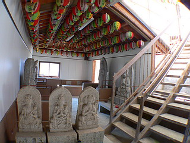
階段を上ると、そこはB棟の屋上部分だった。
祠のようなものがあり、そこにも味わい深い石仏が。コレ絶対素人が作ったんだよなあ。
しかもみんな同じ作風、ということは同じ人が彫った、ということなんだよなあ。
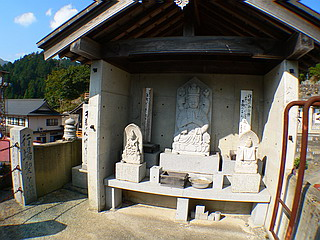
さて屋上には何やら石の滑り台のようなものが…
あ、ここは滝の真上だ。ということはここから水を流しているのだろうか？見たところ給水設備は何もないが、ポリタンクでも背負って階段を上ってここから投下するのだろうか…
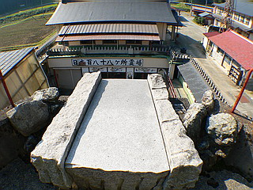
横を見れば他の堂宇群が見える。
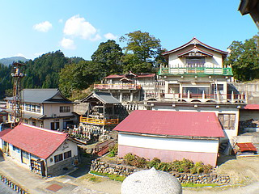
屋上から再び先ほどのA棟の3階に。
そういえばA棟の3階とB棟の屋上部分の階段は何故か2つ並んでいる。
これは明らかにこの百観音堂が巡礼空間を志向している現れだろう。
つまりA棟3階からB棟屋上への経路は構造上同じ階段を行き来しなければならないのだが、少なくとも行きと帰りで違う経路を辿ることで一方通行の巡礼参拝路を確保しているのだ。
江戸時代に人気を博したさざえ堂や本所の五百羅漢堂を髣髴とさせるに充分な複雑な巡礼堂と言って良いのではなかろうか。
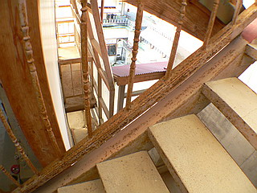
屋上からの下り階段からはA棟3階からさらに先に伸びる踊り場が見える。
A棟3階を経由してその踊り場から見た屋上への階段。先ほど登ってきた階段がその下に見えるのがお判りいただけるだろうか。
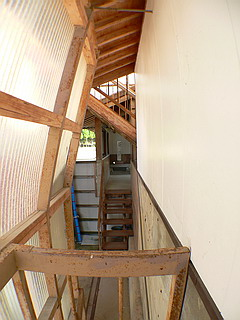 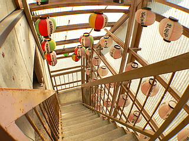
踊り場から先は一気に下まで降りる階段。先程A棟2階から見えたのはこの階段の裏だったのだ。
一度右に曲がるものの一気に池のあるレベルまで降りる事になる。
ここでやっと百観音堂の外に出られるが、この複雑怪奇な一方通行の巡礼迷宮はまだまだ続く。
今度は池を取り囲む屋外迷宮だ。
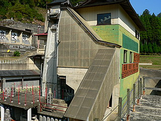 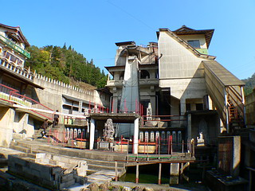
池の中にはいくつかの通路や橋が設けられている。
今度は頼みの矢印がないので慎重に順路を画定して進まないと、同じところを通ってしまったり、見逃している部分があってまた戻ったりとややこしい事この上ない。でも迷路みたいですっっっっごく楽しいいぞ。
七条御滝の真下に立ってみる。滝というにはあまりにも即物的すぎる滝だ。
ホントにここから水が落ちてきたりするんだろうか?
滝壷を覗き込むと水は意外と奇麗だった。
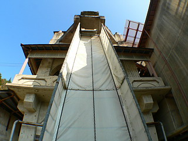 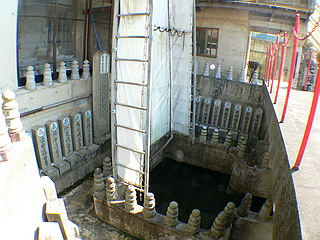
滝の裏側には大きな不動明王の石像がある。
もちろん今まで見てきた石像と同じ作者の作風だ。
ここはB棟の1階に相当するが先ほどの屋内からは到達できない。池からアプローチしなければたどり着けないのだ。
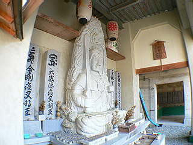 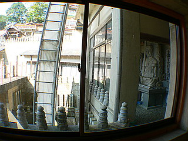
さて、この百観音堂が仏堂っぽくない理由ナンバーワンに挙げられるであろうこの七条御滝。
よ〜く見ると屋上にある石の滑り台のようなものは実はダミーでその下に水の噴出口があるようだ。
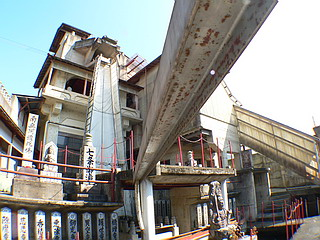
ここで改めてB棟をご覧いただきたい。内部の階段からアプローチ出来る2階と石の滑り台がある屋上の間に通常の参拝路からはアプローチ出来ない秘密のフロアがあることがわかる。
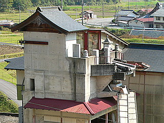 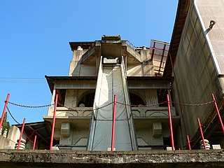
ではその2階と屋上の間にある秘密のフロアにはどう行ったらいいのだろうか？
…実は帰宅後画像を見ていて気づいたのだが、わざわざB棟の屋上部分から鉄梯子で降りて行かなければならないのだ。
なんという回りくどい経路なのだろう。
まるでさざえ堂が3層建築であることを隠していたのと同じようにこの百観音堂も1層分を複雑な経路によってカムフラージュしていたのだろうか。この建物の奥深さを改めて実感した。
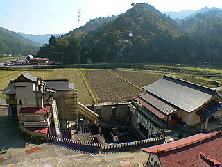 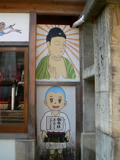
これにて摩訶不思議な百観音巡礼は終了。
判り難くてすいませんねえ〜。
でもホントに複雑だったのと、その複雑さがあまりにも面白かったので思わず全行程を紹介しちゃった次第。
しかしこの後息つく間もなく千人堂をはじめとする数々の仰天仏堂が目白押し。
皆さんお疲れでしょうからここでインターバルを入れます。
…私も疲れたもんで…
中風寺奥の院；その2へ
2006.11.
珍寺大道場 HOME